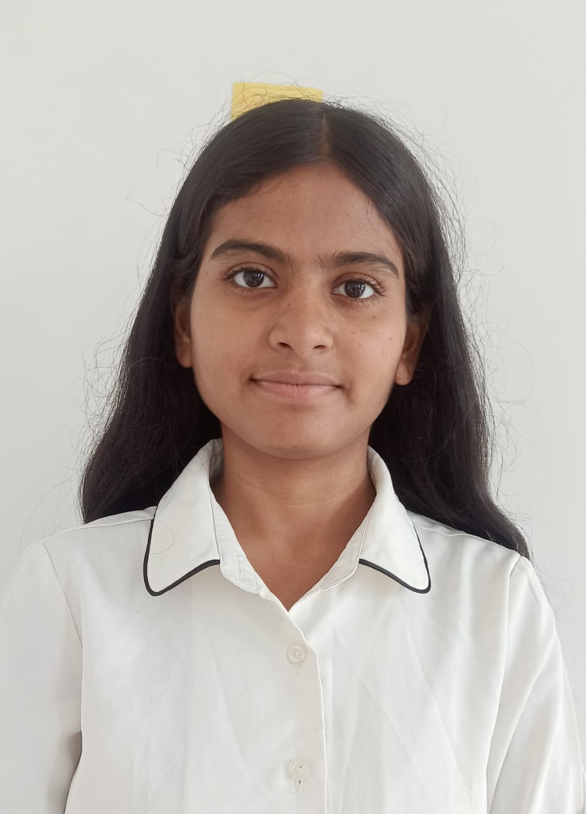

Bhairav

House Leader
Ruchi Kumari
Bageshree
House Leader
Nikky Roy
Malhar
House Leader
Bebee Mishra
House Leader
Ruchi Kumari
House Leader
Nikky Roy
House Leader
Bebee Mishra
Raga Bhairavi is a popular morning raga in Hindustani classical music. It uses komal Re, Ga, Dha, Ni with Ma as the Vadi and Sa as the Samvadi. Known for its calm and sweet mood, it is often sung in bhajans and light classical compositions. Today, it is also performed at any time of the day.
Raga Bageshree is a night raga, sung from late evening to midnight. It uses Komal Ga and Komal Ni, with Ma as the Vadi and Sa as the Samvadi. The raga expresses love and longing (Shringar Ras) and is known for its sweet, emotional mood.
Raga Malhar is associated with the rainy season and is believed to evoke the mood of rain. It is usually sung during monsoon evenings or nights. The raga expresses peace, freshness, and nature’s beauty, with famous forms like Miyan ki Malhar and Gaud Malhar.